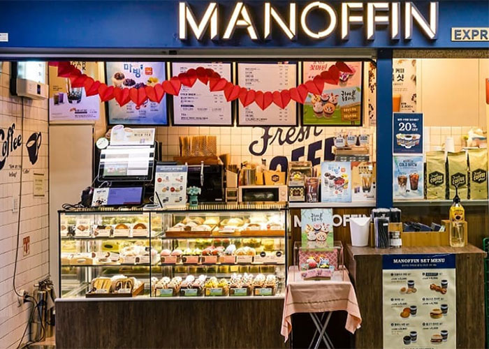
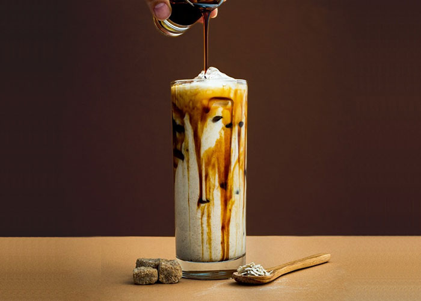
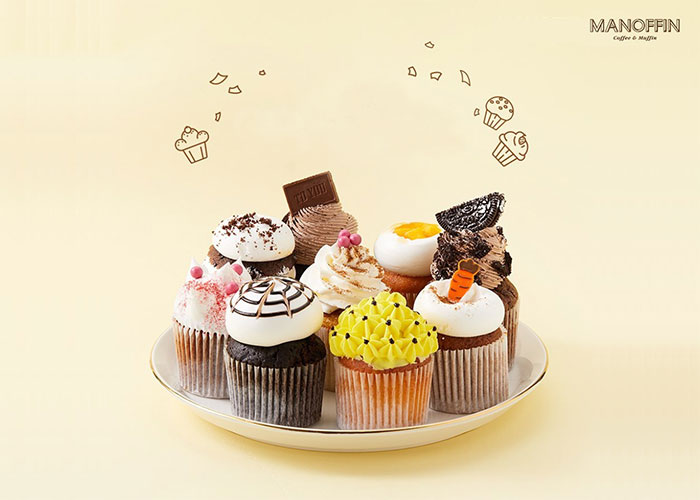

-
브라질 NY2 Fine cup
브라질은 세계 최대 커피 재배 국가로 원두 생산에 최적화된 높은 고도와 자동 기계화 방식의 생산을 통해 생두가 일괄적으로 수확되어 균일한 맛을 가지고 있으며 중후하고 균형 잡힌 맛이 특징입니다. 그중에서도 브라질 CUP TEST Fine cup 등급 원두로 선별을 통해 따로 관리되는 최상등급 원두를 사용합니다
-
콜롬비아 슈프리모
마일드 커피의 대명사로 불리는 가공 기술이 뛰어난 콜롬비아 최상의 원두를 사용합니다. 마노핀 커피의 중강배전 시티 로스팅 포인트를 통해 달콤한 초콜릿 향이 풍부하며 부드러운 맛이 특징인 콜롬비아 슈프리모 원두의 산미와 바디감을 보다 균형 잡힌 조화를 이뤄내 더욱 풍부한 맛을 구현해 냅니다
-
과테말라 SHB
깊고 진한 풍미를 가진 바디감과 강렬한 산미 그리고 감칠맛이 나는 원두로 스트레이트용으로 많이 사용됩니다. 첫 맛은 단순하나 차츰 다양한 맛을 내는 여운을 가지고 있는 원두로 캐러멜의 달콤하고 다크초콜릿의 쌉싸름한 맛을 느낄 수 있는 원두입니다
-
탄자니아 킬리만자로 AA
탄자니아 AA는 부드러운 맛과 거친 맛이 조화를 이루어 가장 아프리카 다운 커피 맛을 구현합니다. 커피 생산의 최적의 조건을 가지고 있는 킬리만자로는 세계 최고의 프리미엄급 원두 중 하나로 깔끔한 신맛, 부드러운 바디감, 풍부한 와인 맛과 꽃 향이 느껴지는 에프터 아로마가 가장 좋은 원두입니다
-
MANOFFIN BRAND
1840년대 런던 거리를 누비던 멋쟁이 행상 ‘머핀맨(Muffin Man)’을
브랜드 이미지로 재탄생시켜 클래식한 멋을 더한 ‘마노핀(Manoffin)’은
글로벌 외식문화기업 MPK그룹이 운영하는 차세대 커피 전문점이다.
최고 품질의 커피와 더불어 영국 전통 방식으로 구워낸 머핀,
컵케이크 등으로 메뉴를 차별화했다.
마노핀은 현재 프리미엄 베이커리 카페 매장과
지하철 역사 중심의 테이크아웃 매장인 익스프레스 형태로 구성돼 있다. -
THE ORIGIN OF MANOFFIN
마노핀은 영국의 머핀에서 출발한다.
머핀은 영국 사람들에게 아주 대중적인 음식이자 사랑받는 빵.
이 때문에 과거 영국의 거리에는 사람들이 머핀을 쉽게 즐길 수 있도록
종을 울리며 머핀을 파는 머핀맨이 있었다.
머핀맨이 주로 판매한 머핀은 잉글리쉬 머핀으로,
우리가 흔히 생각하는 머핀과 달리 이스트를 넣고 발효시킨 반죽을
둥글납작하게 만들어 구운 빵이다.
이렇게 영국에서 시작된 머핀은 미국, 유럽, 아시아 등
전 세계로 퍼져나갔고 다양한 형태로 변화돼
지금까지 많은 사람들의 사랑을 받는 디저트가 됐다. -
MANOFFIN MENU
머핀 신선한 달걀과 우유, 맛있는 견과류와 과일 등 다양한 재료를 곁들여
구워내는 마노핀의 머핀은 잉글리쉬 머핀군과 컵케이크군으로 나뉘며, 종류가 다양하다.
잉글리쉬 머핀군은 매장에서 직접 구운 정통 잉글리쉬 머핀에
꿀, 씨앗, 치즈 등 다양한 재료를 넣어 간식을 넘어 한 끼 식사로도 충분하다.
컵케이크군은 설탕 대신 스위트펄을 넣어 당분을 90% 줄이고 달콤한 맛은 그대로 유지해
살찔 걱정 없이 먹을 수 있는 디저트 라인이다. 마노핀은 최고급 커피머신을 이용하는 것은
물론 물과 온도, 바리스타까지 최상으로 관리하는
커피 개발 프로젝트 ‘M’을 통해 신선한 고품질 커피로 고객들의 사랑을 받고 있다.